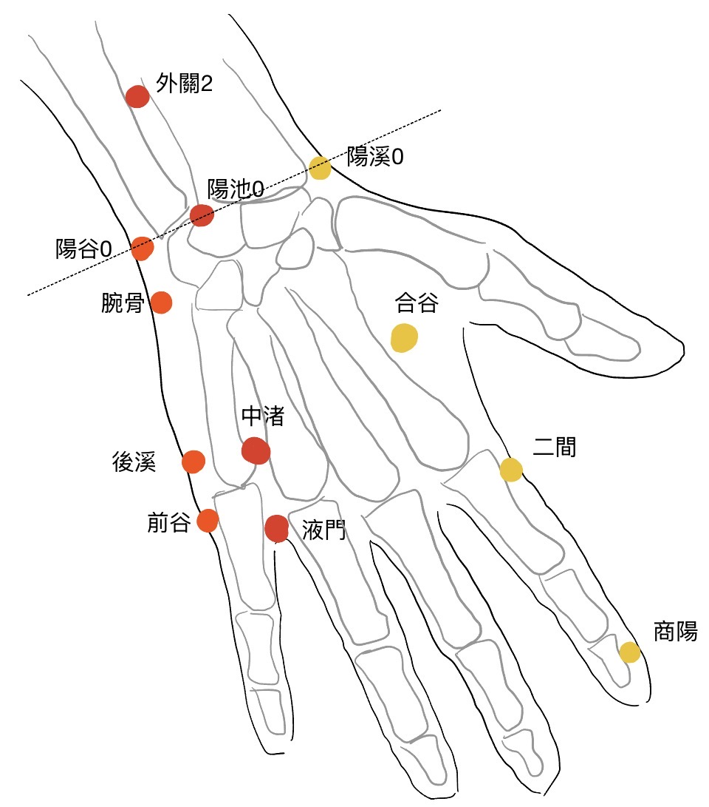
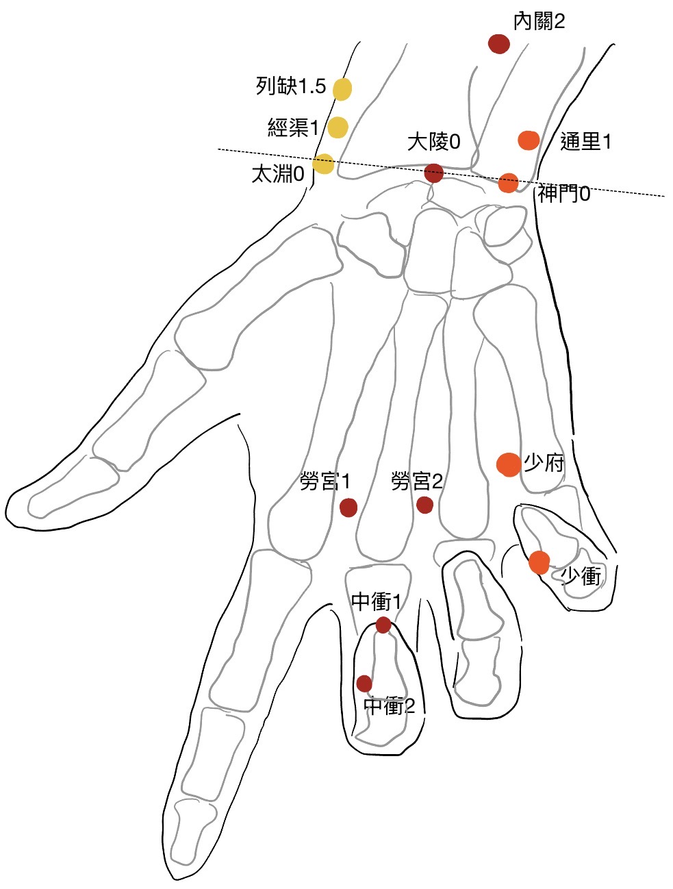
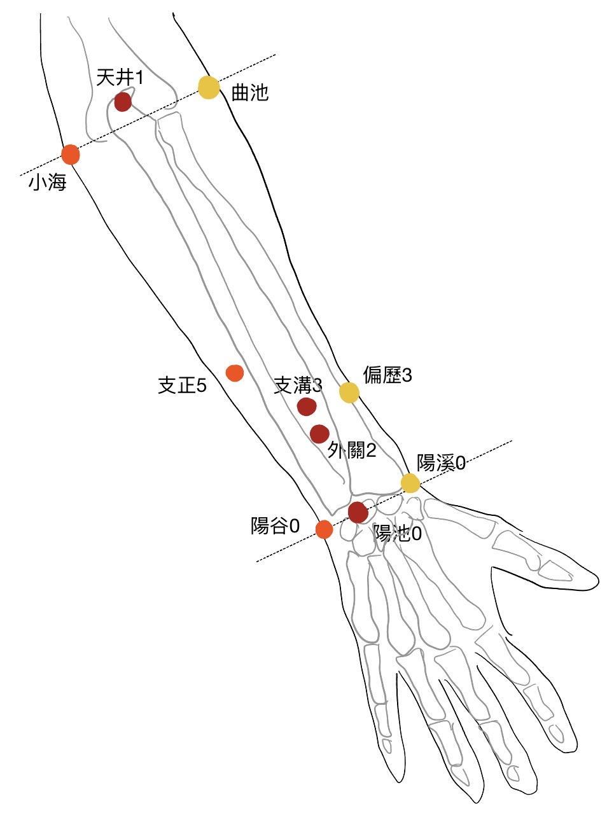
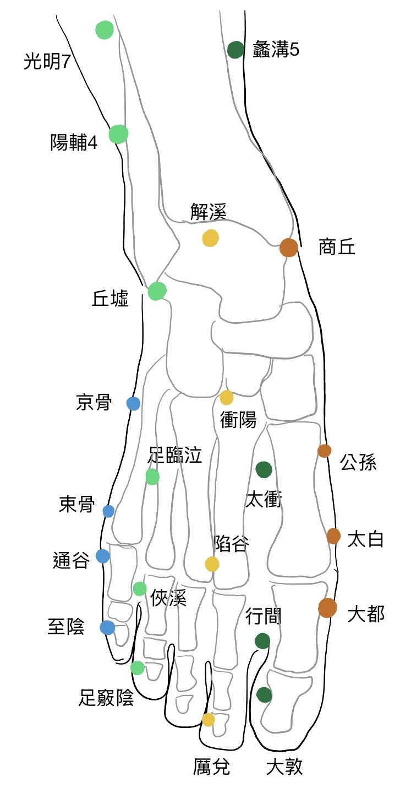
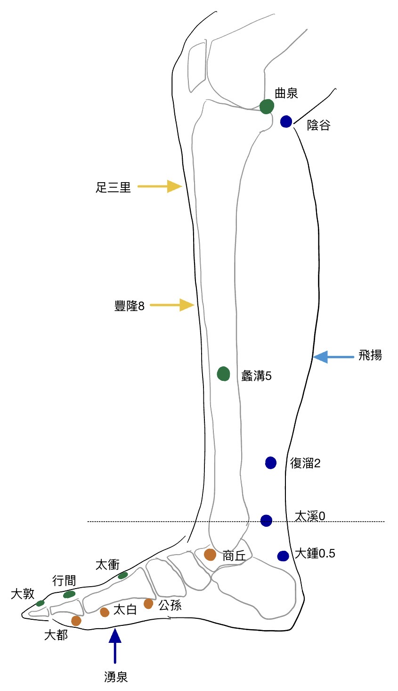

<!DOCTYPE html>
<html lang="zh-TW">
<head>
    <meta charset="UTF-8">
    <meta name="viewport" content="width=device-width, initial-scale=1.0, maximum-scale=1.0, user-scalable=no">
    <title>針灸臨床決策輔助工具</title>
    
    <!-- PWA 設定 -->
    <link rel="manifest" href="manifest.json">
    <meta name="theme-color" content="#4f46e5">
    <meta name="apple-mobile-web-app-capable" content="yes">
    <meta name="apple-mobile-web-app-status-bar-style" content="black-translucent">
    <link rel="apple-touch-icon" href="icon.png">

    <!-- 載入 Tailwind CSS -->
    <script src="https://cdn.tailwindcss.com"></script>

    <!-- 載入 React 核心與 Babel -->
    <script crossorigin src="https://cdnjs.cloudflare.com/ajax/libs/react/18.2.0/umd/react.production.min.js"></script>
    <script crossorigin src="https://cdnjs.cloudflare.com/ajax/libs/react-dom/18.2.0/umd/react-dom.production.min.js"></script>
    <script src="https://cdnjs.cloudflare.com/ajax/libs/babel-standalone/7.23.6/babel.min.js"></script>

    <style>
        body { -webkit-user-select: none; user-select: none; }
        ::-webkit-scrollbar { width: 0px; background: transparent; }
        
        /* 快速按鈕 3D 浮雕陰影效果 */
        .box-neumorphism {
            box-shadow: 4px 4px 10px rgba(0,0,0,0.1), -4px -4px 10px rgba(255,255,255,0.8);
        }
        .box-neumorphism:active {
            box-shadow: inset 4px 4px 10px rgba(0,0,0,0.1), inset -4px -4px 10px rgba(255,255,255,0.8);
        }
    </style>
</head>
<body class="bg-slate-50">
    <div id="root"></div>

    <script type="text/babel">
        const { useState, useMemo } = React;
        const { createRoot } = ReactDOM;

        // --- 內建圖示組件 ---
        const Icons = {
            Menu: () => <svg xmlns="http://www.w3.org/2000/svg" width="28" height="28" viewBox="0 0 24 24" fill="none" stroke="currentColor" strokeWidth="2" strokeLinecap="round" strokeLinejoin="round"><line x1="4" x2="20" y1="12" y2="12"/><line x1="4" x2="20" y1="6" y2="6"/><line x1="4" x2="20" y1="18" y2="18"/></svg>,
            X: () => <svg xmlns="http://www.w3.org/2000/svg" width="24" height="24" viewBox="0 0 24 24" fill="none" stroke="currentColor" strokeWidth="2" strokeLinecap="round" strokeLinejoin="round"><path d="M18 6 6 18"/><path d="m6 6 12 12"/></svg>,
            User: () => <svg xmlns="http://www.w3.org/2000/svg" width="20" height="20" viewBox="0 0 24 24" fill="none" stroke="currentColor" strokeWidth="2" strokeLinecap="round" strokeLinejoin="round"><path d="M19 21v-2a4 4 0 0 0-4-4H9a4 4 0 0 0-4 4v2"/><circle cx="12" cy="7" r="4"/></svg>,
            Activity: () => <svg xmlns="http://www.w3.org/2000/svg" width="32" height="32" viewBox="0 0 24 24" fill="none" stroke="currentColor" strokeWidth="2" strokeLinecap="round" strokeLinejoin="round"><path d="M22 12h-4l-3 9L9 3l-3 9H2"/></svg>,
            ArrowRight: ({className}) => <svg xmlns="http://www.w3.org/2000/svg" width="24" height="24" viewBox="0 0 24 24" fill="none" stroke="currentColor" strokeWidth="2" strokeLinecap="round" strokeLinejoin="round" className={className}><path d="M5 12h14"/><path d="m12 5 7 7-7 7"/></svg>,
            RotateCcw: ({className}) => <svg xmlns="http://www.w3.org/2000/svg" width="24" height="24" viewBox="0 0 24 24" fill="none" stroke="currentColor" strokeWidth="2" strokeLinecap="round" strokeLinejoin="round" className={className}><path d="M3 12a9 9 0 1 0 9-9 9.75 9.75 0 0 0-6.74 2.74L3 8"/><path d="M3 3v5h5"/></svg>,
            MapPin: ({className}) => <svg xmlns="http://www.w3.org/2000/svg" width="24" height="24" viewBox="0 0 24 24" fill="none" stroke="currentColor" strokeWidth="2" strokeLinecap="round" strokeLinejoin="round" className={className}><path d="M20 10c0 6-8 12-8 12s-8-6-8-12a8 8 0 0 1 16 0Z"/><circle cx="12" cy="10" r="3"/></svg>,
            Copy: ({className}) => <svg xmlns="http://www.w3.org/2000/svg" width="20" height="20" viewBox="0 0 24 24" fill="none" stroke="currentColor" strokeWidth="2" strokeLinecap="round" strokeLinejoin="round" className={className}><rect width="14" height="14" x="8" y="8" rx="2" ry="2"/><path d="M4 16c-1.1 0-2-.9-2-2V4c0-1.1.9-2 2-2h10c1.1 0 2 .9 2 2"/></svg>,
            Check: ({className}) => <svg xmlns="http://www.w3.org/2000/svg" width="20" height="20" viewBox="0 0 24 24" fill="none" stroke="currentColor" strokeWidth="2" strokeLinecap="round" strokeLinejoin="round" className={className}><polyline points="20 6 9 17 4 12"/></svg>
        };

        const POINT_LOCATIONS = {
          '少府': { icon: '✋', text: '手掌面，第4、5掌骨之間，握拳時小指尖處。' },
          '勞宮': { icon: '✋', text: '手掌心，第2、3掌骨之間，握拳時中指尖處。' },
          '少衝': { icon: '✋', text: '小指末節橈側，距指甲角0.1寸。' },
          '中衝': { icon: '✋', text: '中指末節尖端中央。' },
          '前谷': { icon: '✋', text: '手尺側，微握拳，第5指掌關節前尺側，橫紋頭赤白肉際。' },
          '後溪': { icon: '✋', text: '手尺側，微握拳，第5指掌關節後尺側，橫紋頭赤白肉際。' },
          '液門': { icon: '✋', text: '手背，第4、5指間，指蹼緣後方赤白肉際。' },
          '中渚': { icon: '✋', text: '手背，第4、5掌骨間，第4掌指關節後上方凹陷處。' },
          '商陽': { icon: '✋', text: '食指末節橈側，距指甲角0.1寸。' },
          '二間': { icon: '✋', text: '食指本節（第2掌指關節）前，橈側凹陷處。' },
          '經渠': { icon: '💪', text: '前臂掌面橈側，橈骨莖突與橈動脈之間。' },
          '陽溪': { icon: '💪', text: '腕背橫紋橈側，手拇指向上翹起時，在伸拇短肌腱與伸拇長肌腱之間的凹陷中。' },
          '支溝': { icon: '💪', text: '前臂背側，陽池穴上3寸，尺骨與橈骨之間。' },
          '天井': { icon: '💪', text: '臂外側，屈肘時，當肘尖直上1寸凹陷處。' },
          '陽谷': { icon: '💪', text: '手腕尺側，尺骨莖突與三角骨之間的凹陷處。' },
          '小海': { icon: '💪', text: '肘內側，尺骨鷹嘴與肱骨內上髁之間凹陷處。' },
          '太淵': { icon: '💪', text: '腕掌側橫紋橈側，橈動脈搏動處。' },
          '曲池': { icon: '💪', text: '肘橫紋外側端，屈肘，當尺澤與肱骨外上髁連線中點。' },
          '尺澤': { icon: '💪', text: '肘橫紋中，肱二頭肌腱橈側凹陷處。' },
          '神門': { icon: '💪', text: '腕部腕掌橫紋上，尺側腕屈肌腱橈側凹陷處。' },
          '大陵': { icon: '💪', text: '腕掌橫紋的中點處，當掌長肌腱與橈側腕屈肌腱之間。' },
          '列缺': { icon: '💪', text: '腕部橈骨莖突後骨縫間，肱橈肌與拇長展肌腱之間。' },
          '偏歷': { icon: '💪', text: '前臂背面橈側，腕橫紋上3寸處。' },
          '內關': { icon: '💪', text: '前臂掌側，腕橫紋上2寸，掌長肌腱與橈側腕屈肌腱之間。' },
          '外關': { icon: '💪', text: '前臂伸側面腕背橫紋後二寸，尺骨與橈骨之間。' },
          '通里': { icon: '💪', text: '在前臂掌側面，腕橫紋上1寸，尺側屈腕肌肌腱橈側緣凹陷處。' },
          '支正': { icon: '💪', text: '前臂背面尺側，小海與陽谷的連線上，腕背橫紋上5寸處。' },
          '合谷': { icon: '✋', text: '手背第1～2掌骨間，第2掌骨橈側的中點處。' },
          '陽池': { icon: '✋', text: '腕背橫紋中，當指伸肌腱尺側緣凹陷處。' },
          '腕骨': { icon: '✋', text: '在手掌尺側赤白肉際，第5掌骨基底與鉤骨之間凹陷處。' },
          '大敦': { icon: '🦶', text: '足大趾末節外側，距指甲角0.1寸。' },
          '足竅陰': { icon: '🦶', text: '足第4趾末節外側，距指甲角0.1寸。' },
          '太白': { icon: '🦶', text: '足內側緣，足大趾本節（第1跖趾關節）後下方赤白肉際凹陷處。' },
          '陷谷': { icon: '🦶', text: '足背，第2、3跖骨結合部前方凹陷處。' },
          '足臨泣': { icon: '🦶', text: '足背外側，第4、5跖骨底結合部前方，第5長伸肌腱外側凹陷處。' },
          '俠溪': { icon: '🦶', text: '足背外側，第4、5趾間，趾蹼緣後方赤白肉際。' },
          '通谷': { icon: '🦶', text: '足外側，足小趾本節（第5跖趾關節）前下方赤白肉際凹陷處。' },
          '束骨': { icon: '🦶', text: '足外側，足小趾本節（第5跖趾關節）後下方赤白肉際凹陷處。' },
          '至陰': { icon: '🦶', text: '足小趾末節外側，距指甲角0.1寸。' },
          '大都': { icon: '🦶', text: '足內側緣，足大趾本節（第1跖趾關節）前下方赤白肉際凹陷處。' },
          '厲兌': { icon: '🦶', text: '足第2趾末節外側，距指甲角0.1寸。' },
          '解溪': { icon: '🦶', text: '足背與小腿交界處的橫紋中央凹陷處，拇長伸肌腱與趾長伸肌腱之間。' },
          '行間': { icon: '🦶', text: '足背，第1、2趾間，趾蹼緣後方赤白肉際。' },
          '湧泉': { icon: '🦶', text: '足底，卷足時足前部凹陷處。' },
          '商丘': { icon: '🦶', text: '足內踝前下方凹陷中。' },
          '衝陽': { icon: '🦶', text: '在足背最高處，拇長伸肌腱與趾長伸肌腱之間，足背動脈搏動處。' },
          '丘墟': { icon: '🦶', text: '足背，外踝前下方，伸趾長肌腱外側，距跟關節間凹陷處。' },
          '京骨': { icon: '🦶', text: '在足外側部，第5跖骨粗隆下方赤白肉際處，當小趾尖與足跟底後緣連線的中點。' },
          '太衝': { icon: '🦶', text: '足背第1～2跖骨間隙的後方凹陷處。當行間後二寸。' },
          '太溪': { icon: '🦶', text: '足內側部，內踝後方，內踝尖與跟腱之間凹陷處。' },
          '大鍾': { icon: '🦶', text: '在足內側部，內踝後下方，跟腱附著部內側前方凹陷處，當太溪後下5分。' },
          '陰谷': { icon: '🦵', text: '膕窩內側，屈膝時，當半腱肌肌腱與半膜肌肌腱之間。' },
          '委中': { icon: '🦵', text: '膕橫紋中點。' },
          '曲泉': { icon: '🦵', text: '膝內側，屈膝，當膝關節內側面橫紋內側端，股骨內側髁的後緣，半腱肌、半膜肌止端的前緣凹陷處。' },
          '陽輔': { icon: '🦵', text: '小腿外側，外踝尖上4寸，腓骨前緣稍前方。' },
          '復溜': { icon: '🦵', text: '小腿內側，太溪直上2寸，跟腱的前方。' },
          '足三里': { icon: '🦵', text: '小腿前外側，外膝眼下3寸，脛骨前緣一橫指。' },
          '公孫': { icon: '🦶', text: '在足內側緣，第1跖骨基底前下方凹陷處，當太白後1寸。' },
          '豐隆': { icon: '🦵', text: '在小腿前外側，外踝尖上8寸，脛骨前緣外二橫指處。' },
          '蠡溝': { icon: '🦵', text: '小腿內側，內踝尖上五寸，脛骨內側面中。' },
          '光明': { icon: '🦵', text: '在小腿外側部，外踝尖上五寸，腓骨前緣凹陷處，當趾長伸肌與腓骨短肌之間。' },
          '飛揚': { icon: '🦵', text: '小腿後面，外踝後（崑崙）直上7寸，當承山外下方1寸凹陷處。' },
        };

        const TANGYE_RULES = {
          male: {
            '心火': {
              '太過': { sedate: { point: '少府', side: 'left', desc: '向心、吐氣進針、深刺45度、陰數、逆轉' }, tonify: { point: '前谷', side: 'right', desc: '遠心、吸氣進針、淺刺15度、陽數、順轉' } },
              '不足': { tonify: { point: '少府', side: 'left', desc: '遠心、吸氣進針、淺刺15度、陽數、順轉' }, sedate: { point: '前谷', side: 'right', desc: '向心、吐氣進針、深刺45度、陰數、逆轉' } }
            },
            '肝木': {
              '太過': { sedate: { point: '大敦', side: 'right', desc: '向心、吐氣進針、深刺45度、陰數、逆轉' }, tonify: { point: '足竅陰', side: 'left', desc: '遠心、吸氣進針、淺刺15度、陽數、順轉' } },
              '不足': { tonify: { point: '大敦', side: 'right', desc: '遠心、吸氣進針、淺刺15度、陽數、順轉' }, sedate: { point: '足竅陰', side: 'left', desc: '向心、吐氣進針、深刺45度、陰數、逆轉' } }
            },
            '腎水': {
              '太過': { sedate: { point: '陰谷', side: 'right', desc: '向心、吐氣進針、深刺45度、陰數、逆轉' }, tonify: { point: '委中', side: 'left', desc: '遠心、吸氣進針、淺刺15度、陽數、順轉' } },
              '不足': { tonify: { point: '陰谷', side: 'right', desc: '遠心、吸氣進針、淺刺15度、陽數、順轉' }, sedate: { point: '委中', side: 'left', desc: '向心、吐氣進針、深刺45度、陰數、逆轉' } }
            },
            '肺金': {
              '太過': { sedate: { point: '經渠', side: 'left', desc: '向心、吐氣進針、深刺45度、陰數、逆轉' }, tonify: { point: '陽溪', side: 'right', desc: '遠心、吸氣進針、淺刺15度、陽數、順轉' } },
              '不足': { tonify: { point: '經渠', side: 'left', desc: '遠心、吸氣進針、淺刺15度、陽數、順轉' }, sedate: { point: '陽溪', side: 'right', desc: '向心、吐氣進針、深刺45度、陰數、逆轉' } }
            },
            '脾土': {
              '太過': { sedate: { point: '太白', side: 'right', desc: '向心、吐氣進針、深刺45度、陰數、逆轉' }, tonify: { point: '陷谷', side: 'left', desc: '遠心、吸氣進針、淺刺15度、陽數、順轉' } },
              '不足': { tonify: { point: '太白', side: 'right', desc: '遠心、吸氣進針、淺刺15度、陽數、順轉' }, sedate: { point: '陷谷', side: 'left', desc: '向心、吐氣進針、深刺45度、陰數、逆轉' } }
            },
            '命門': {
              '太過': { sedate: { point: '勞宮', side: 'left', desc: '向心、吐氣進針、深刺45度、陰數、逆轉' }, tonify: { point: '液門', side: 'right', desc: '遠心、吸氣進針、淺刺15度、陽數、順轉' } },
              '不足': { tonify: { point: '勞宮', side: 'left', desc: '遠心、吸氣進針、淺刺15度、陽數、順轉' }, sedate: { point: '液門', side: 'right', desc: '遠心、吸氣進針、淺刺15度、陽數、順轉' } }
            }
          },
          female: {
            '心火': {
              '太過': { sedate: { point: '少府', side: 'right', desc: '向心、吐氣進針、深刺45度、陰數、逆轉' }, tonify: { point: '前谷', side: 'left', desc: '遠心、吸氣進針、淺刺15度、陽數、順轉' } },
              '不足': { tonify: { point: '少府', side: 'right', desc: '遠心、吸氣進針、淺刺15度、陽數、順轉' }, sedate: { point: '前谷', side: 'left', desc: '向心、吐氣進針、深刺45度、陰數、逆轉' } }
            },
            '肝木': {
              '太過': { sedate: { point: '大敦', side: 'left', desc: '向心、吐氣進針、深刺45度、陰數、逆轉' }, tonify: { point: '足竅陰', side: 'right', desc: '遠心、吸氣進針、淺刺15度、陽數、順轉' } },
              '不足': { tonify: { point: '大敦', side: 'left', desc: '遠心、吸氣進針、淺刺15度、陽數、順轉' }, sedate: { point: '足竅陰', side: 'right', desc: '向心、吐氣進針、深刺45度、陰數、逆轉' } }
            },
            '腎水': {
              '太過': { sedate: { point: '陰谷', side: 'left', desc: '向心、吐氣進針、深刺45度、陰數、逆轉' }, tonify: { point: '委中', side: 'right', desc: '遠心、吸氣進針、淺刺15度、陽數、順轉' } },
              '不足': { tonify: { point: '陰谷', side: 'left', desc: '遠心、吸氣進針、淺刺15度、陽數、順轉' }, sedate: { point: '委中', side: 'right', desc: '向心、吐氣進針、深刺45度、陰數、逆轉' } }
            },
            '肺金': {
              '太過': { sedate: { point: '經渠', side: 'right', desc: '向心、吐氣進針、深刺45度、陰數、逆轉' }, tonify: { point: '陽溪', side: 'left', desc: '遠心、吸氣進針、淺刺15度、陽數、順轉' } },
              '不足': { tonify: { point: '經渠', side: 'right', desc: '遠心、吸氣進針、淺刺15度、陽數、順轉' }, sedate: { point: '陽溪', side: 'left', desc: '向心、吐氣進針、深刺45度、陰數、逆轉' } }
            },
            '脾土': {
              '太過': { sedate: { point: '太白', side: 'left', desc: '向心、吐氣進針、深刺45度、陰數、逆轉' }, tonify: { point: '陷谷', side: 'right', desc: '遠心、吸氣進針、淺刺15度、陽數、順轉' } },
              '不足': { tonify: { point: '太白', side: 'left', desc: '遠心、吸氣進針、數、順轉' }, sedate: { point: '陷谷', side: 'right', desc: '向心、吐氣進針、深刺45度、陰數、逆轉' } }
            },
            '命門': {
              '太過': { sedate: { point: '勞宮', side: 'right', desc: '向心、吐氣進針、深刺45度、陰數、逆轉' }, tonify: { point: '液門', side: 'left', desc: '遠心、吸氣進針、淺刺15度、陽數、順轉' } },
              '不足': { tonify: { point: '勞宮', side: 'right', desc: '遠心、吸氣進針、淺刺15度、陽數、順轉' }, sedate: { point: '液門', side: 'left', desc: '遠心、吸氣進針、淺刺15度、陽數、順轉' } }
            }
          }
        };

        const ZHONGSHI_RULES = {
          male: {
            '人迎一盛（補肝瀉膽）': { tonify: { point: '曲泉', side: 'right', desc: '遠心、吸氣進針、淺刺15度、陽數、順轉' }, sedate: { point: '足臨泣', alias: '陽輔', side: 'left', desc: '向心、吐氣進針、深刺45度、陰數、逆轉' } },
            '人迎二盛（補腎瀉膀胱）': { tonify: { point: '復溜', side: 'right', desc: '遠心、吸氣進針、淺刺15度、陽數、順轉' }, sedate: { point: '通谷', alias: '束骨', side: 'left', desc: '向心、吐氣進針、深刺45度、陰數、逆轉' } },
            '人迎三盛（補脾瀉胃）': { tonify: { point: '大都', side: 'right', desc: '遠心、吸氣進針、淺刺15度、陽數、順轉' }, sedate: { point: '足三里', alias: '厲兌', side: 'left', desc: '向心、吐氣進針、深刺45度、陰數、逆轉' } },
            '人迎一盛而躁（補心包瀉三焦）': { tonify: { point: '中衝', side: 'left', desc: '遠心、吸氣進針、淺刺15度、陽數、順轉' }, sedate: { point: '支溝', alias: '天井', side: 'right', desc: '向心、吐氣進針、深刺45度、陰數、逆轉' } },
            '人迎二盛而躁（補心瀉小腸）': { tonify: { point: '少衝', side: 'left', desc: '遠心、吸氣進針、淺刺15度、陽數、順轉' }, sedate: { point: '陽谷', alias: '小海', side: 'right', desc: '向心、吐氣進針、深刺45度、陰數、逆轉' } },
            '人迎三盛而躁（補肺瀉大腸）': { tonify: { point: '太淵', side: 'left', desc: '遠心、吸氣進針、淺刺15度、陽數、順轉' }, sedate: { point: '商陽', alias: '二間', side: 'right', desc: '向心、吐氣進針、深刺45度、陰數、逆轉' } },
            '脈口一盛（補膽瀉肝）': { tonify: { point: '足臨泣', alias: '俠溪', side: 'right', desc: '向心、吐氣進針、淺刺15度、陽數、順轉' }, sedate: { point: '行間', side: 'left', desc: '遠心、吸氣進針、深刺45度、陰數、逆轉' } },
            '脈口二盛（補膀胱瀉腎）': { tonify: { point: '通谷', alias: '至陰', side: 'right', desc: '向心、吐氣進針、淺刺15度、陽數、順轉' }, sedate: { point: '湧泉', side: 'left', desc: '遠心、吸氣進針、深刺45度、陰數、逆轉' } },
            '脈口三盛（補胃瀉脾）': { tonify: { point: '足三里', alias: '解溪', side: 'right', desc: '向心、吐氣進針、淺刺15度、陽數、順轉' }, sedate: { point: '商丘', side: 'left', desc: '遠心、吸氣進針、深刺45度、陰數、逆轉' } },
            '脈口一盛而躁（補三焦瀉心包）': { tonify: { point: '支溝', alias: '中渚', side: 'left', desc: '向心、吐氣進針、淺刺15度、陽數、順轉' }, sedate: { point: '大陵', side: 'right', desc: '遠心、吸氣進針、深刺45度、陰數、逆轉' } },
            '脈口二盛而躁（補小腸瀉心）': { tonify: { point: '陽谷', alias: '後溪', side: 'left', desc: '向心、吐氣進針、淺刺15度、陽數、順轉' }, sedate: { point: '神門', side: 'right', desc: '遠心、吸氣進針、深刺45度、陰數、逆轉' } },
            '脈口三盛而躁（補大腸瀉肺）': { tonify: { point: '商陽', alias: '曲池', side: 'left', desc: '向心、吐氣進針、淺刺15度、陽數、順轉' }, sedate: { point: '尺澤', side: 'right', desc: '遠心、吸氣進針、深刺45度、陰數、逆轉' } }
          },
          female: {
            '人迎一盛（補肝瀉膽）': { tonify: { point: '曲泉', side: 'left', desc: '遠心、吸氣進針、淺刺15度、陽數、順轉' }, sedate: { point: '足臨泣', alias: '陽輔', side: 'right', desc: '向心、吐氣進針、深刺45度、陰數、逆轉' } },
            '人迎二盛（補腎瀉膀胱）': { tonify: { point: '復溜', side: 'left', desc: '遠心、吸氣進針、淺刺15度、陽數、順轉' }, sedate: { point: '通谷', alias: '束骨', side: 'right', desc: '向心、吐氣進針、深刺45度、陰數、逆轉' } },
            '人迎三盛（補脾瀉胃）': { tonify: { point: '大都', side: 'left', desc: '遠心、吸氣進針、淺刺15度、陽數、順轉' }, sedate: { point: '足三里', alias: '厲兌', side: 'right', desc: '向心、吐氣進針、深刺45度、陰數、逆轉' } },
            '人迎一盛而躁（補心包瀉三焦）': { tonify: { point: '中衝', side: 'right', desc: '遠心、吸氣進針、淺刺15度、陽數、順轉' }, sedate: { point: '支溝', alias: '天井', side: 'left', desc: '向心、吐氣進針、深刺45度、陰數、逆轉' } },
            '人迎二盛而躁（補心瀉小腸）': { tonify: { point: '少衝', side: 'right', desc: '遠心、吸氣進針、淺刺15度、陽數、順轉' }, sedate: { point: '陽谷', alias: '小海', side: 'left', desc: '向心、吐氣進針、深刺45度、陰數、逆轉' } },
            '人迎三盛而躁（補肺瀉大腸）': { tonify: { point: '太淵', side: 'right', desc: '遠心、吸氣進針、淺刺15度、陽數、順轉' }, sedate: { point: '商陽', alias: '二間', side: 'left', desc: '向心、吐氣進針、深刺45度、陰數、逆轉' } },
            '脈口一盛（補膽瀉肝）': { tonify: { point: '足臨泣', alias: '俠溪', side: 'left', desc: '向心、吐氣進針、淺刺15度、陽數、順轉' }, sedate: { point: '行間', side: 'right', desc: '遠心、吸氣進針、深刺45度、陰數、逆轉' } },
            '脈口二盛（補膀胱瀉腎）': { tonify: { point: '通谷', alias: '至陰', side: 'left', desc: '向心、吐氣進針、淺刺15度、陽數、順轉' }, sedate: { point: '湧泉', side: 'right', desc: '遠心、吸氣進針、深刺45度、陰數、逆轉' } },
            '脈口三盛（補胃瀉脾）': { tonify: { point: '足三里', alias: '解溪', side: 'left', desc: '向心、吐氣進針、淺刺15度、陽數、順轉' }, sedate: { point: '商丘', side: 'right', desc: '遠心、吸氣進針、深刺45度、陰數、逆轉' } },
            '脈口一盛而躁（補三焦瀉心包）': { tonify: { point: '支溝', alias: '中渚', side: 'right', desc: '向心、吐氣進針、淺刺15度、陽數、順轉' }, sedate: { point: '大陵', side: 'left', desc: '遠心、吸氣進針、深刺45度、陰數、逆轉' } },
            '脈口二盛而躁（補小腸瀉心）': { tonify: { point: '陽谷', alias: '後溪', side: 'right', desc: '向心、吐氣進針、淺刺15度、陽數、順轉' }, sedate: { point: '神門', side: 'left', desc: '遠心、吸氣進針、深刺45度、陰數、逆轉' } },
            '脈口三盛而躁（補大腸瀉肺）': { tonify: { point: '商陽', alias: '曲池', side: 'right', desc: '向心、吐氣進針、淺刺15度、陽數、順轉' }, sedate: { point: '尺澤', side: 'left', desc: '遠心、吸氣進針、深刺45度、陰數、逆轉' } }
          }
        };

        const YUAN_LUO_RULES = {
          male: {
            '心火': {
              '太過': { tonify1: { point: '腕骨', side: 'left', desc: '直刺、陽數、順轉' }, tonify2: { point: '通里', side: 'right', desc: '直刺、陽數、順轉' } },
              '不足': { tonify1: { point: '神門', side: 'left', desc: '直刺、陽數、順轉' }, tonify2: { point: '支正', side: 'right', desc: '直刺、陽數、順轉' } }
            },
            '肝木': {
              '太過': { tonify1: { point: '丘墟', side: 'right', desc: '直刺、陽數、順轉' }, tonify2: { point: '蠡溝', side: 'left', desc: '直刺、陽數、順轉' } },
              '不足': { tonify1: { point: '太衝', side: 'right', desc: '直刺、陽數、順轉' }, tonify2: { point: '光明', side: 'left', desc: '直刺、陽數、順轉' } }
            },
            '腎水': {
              '太過': { tonify1: { point: '京骨', side: 'right', desc: '直刺、陽數、順轉' }, tonify2: { point: '大鍾', side: 'left', desc: '直刺、陽數、順轉' } },
              '不足': { tonify1: { point: '太溪', side: 'right', desc: '直刺、陽數、順轉' }, tonify2: { point: '飛揚', side: 'left', desc: '直刺、陽數、順轉' } }
            },
            '肺金': {
              '太過': { tonify1: { point: '合谷', side: 'left', desc: '直刺、陽數、順轉' }, tonify2: { point: '列缺', side: 'right', desc: '直刺、陽數、順轉' } },
              '不足': { tonify1: { point: '太淵', side: 'left', desc: '直刺、陽數、順轉' }, tonify2: { point: '偏歷', side: 'right', desc: '直刺、陽數、順轉' } }
            },
            '脾土': {
              '太過': { tonify1: { point: '衝陽', side: 'right', desc: '直刺、陽數、順轉' }, tonify2: { point: '公孫', side: 'left', desc: '直刺、陽數、順轉' } },
              '不足': { tonify1: { point: '太白', side: 'right', desc: '直刺、陽數、順轉' }, tonify2: { point: '豐隆', side: 'left', desc: '直刺、陽數、順轉' } }
            },
            '命門': {
              '太過': { tonify1: { point: '陽池', side: 'left', desc: '直刺、陽數、順轉' }, tonify2: { point: '內關', side: 'right', desc: '直刺、陽數、順轉' } },
              '不足': { tonify1: { point: '大陵', side: 'left', desc: '直刺、陽數、順轉' }, tonify2: { point: '外關', side: 'right', desc: '直刺、陽數、順轉' } }
            }
          },
          female: {
            '心火': {
              '太過': { tonify1: { point: '腕骨', side: 'right', desc: '直刺、陽數、順轉' }, tonify2: { point: '通里', side: 'left', desc: '直刺、陽數、順轉' } },
              '不足': { tonify1: { point: '神門', side: 'right', desc: '直刺、陽數、順轉' }, tonify2: { point: '支正', side: 'left', desc: '直刺、陽數、順轉' } }
            },
            '肝木': {
              '太過': { tonify1: { point: '丘墟', side: 'left', desc: '直刺、陽數、順轉' }, tonify2: { point: '蠡溝', side: 'right', desc: '直刺、陽數、順轉' } },
              '不足': { tonify1: { point: '太衝', side: 'left', desc: '直刺、陽數、順轉' }, tonify2: { point: '光明', side: 'right', desc: '直刺、陽數、順轉' } }
            },
            '腎水': {
              '太過': { tonify1: { point: '京骨', side: 'left', desc: '直刺、陽數、順轉' }, tonify2: { point: '大鍾', side: 'right', desc: '直刺、陽數、順轉' } },
              '不足': { tonify1: { point: '太溪', side: 'left', desc: '直刺、陽數、順轉' }, tonify2: { point: '飛揚', side: 'right', desc: '直刺、陽數、順轉' } }
            },
            '肺金': {
              '太過': { tonify1: { point: '合谷', side: 'right', desc: '直刺、陽數、順轉' }, tonify2: { point: '列缺', side: 'left', desc: '直刺、陽數、順轉' } },
              '不足': { tonify1: { point: '太淵', side: 'right', desc: '直刺、陽數、順轉' }, tonify2: { point: '偏歷', side: 'left', desc: '直刺、陽數、順轉' } }
            },
            '脾土': {
              '太過': { tonify1: { point: '衝陽', side: 'left', desc: '直刺、陽數、順轉' }, tonify2: { point: '公孫', side: 'right', desc: '直刺、陽數、順轉' } },
              '不足': { tonify1: { point: '太白', side: 'left', desc: '直刺、陽數、順轉' }, tonify2: { point: '豐隆', side: 'right', desc: '直刺、陽數、順轉' } }
            },
            '命門': {
              '太過': { tonify1: { point: '陽池', side: 'right', desc: '直刺、陽數、順轉' }, tonify2: { point: '內關', side: 'left', desc: '直刺、陽數、順轉' } },
              '不足': { tonify1: { point: '大陵', side: 'right', desc: '直刺、陽數、順轉' }, tonify2: { point: '外關', side: 'left', desc: '直刺、陽數、順轉' } }
            }
          }
        };

        const QUICK_PULSE_MAPPING = {
            male: {
                '0-0': '命門', '1-0': '脾土', '2-0': '肺金',  // 左排(右手)
                '0-1': '腎水', '1-1': '肝木', '2-1': '心火'   // 右排(左手)
            },
            female: {
                '0-0': '腎水', '1-0': '肝木', '2-0': '心火',  // 左排(右手)
                '0-1': '命門', '1-1': '脾土', '2-1': '肺金'   // 右排(左手)
            }
        };

        const QUICK_ZHONGSHI_MAPPING = {
            male: {
                '0-0': '脈口二盛', '1-0': '脈口三盛', '2-0': '脈口一盛',
                '0-1': '人迎二盛', '1-1': '人迎三盛', '2-1': '人迎一盛'
            },
            female: {
                '0-0': '人迎二盛', '1-0': '人迎三盛', '2-0': '人迎一盛',
                '0-1': '脈口二盛', '1-1': '脈口三盛', '2-1': '脈口一盛'
            }
        };

        const ResultCard = ({ result, displayActions, locationHints, handleCopy, isCopied, systemChoice }) => {
            if (!result) return null;
            return (
                <div className="mt-8 animate-in slide-in-from-bottom-8 duration-700">
                    <div className="flex justify-between items-center mb-4 border-b pb-2">
                        <h3 className="text-2xl font-bold text-slate-800">針灸處方</h3>
                        <button onClick={handleCopy} className="flex items-center gap-2 px-4 py-2 bg-purple-100 hover:bg-purple-200 text-purple-700 rounded-lg font-bold transition-colors">
                            {isCopied ? <><Icons.Check className="w-5 h-5"/> 已複製</> : <><Icons.Copy className="w-5 h-5"/> 複製</>}
                        </button>
                    </div>
                    
                    <div className="bg-white rounded-xl shadow-lg border border-slate-200 overflow-hidden">
                        <div className="bg-indigo-900 text-white p-4">
                        <div className="flex justify-between items-center">
                            <h4 className="text-xl font-bold">{result.method}</h4>
                            <span className="bg-white/20 px-3 py-1 rounded-full text-sm">{result.title}</span>
                        </div>
                        </div>

                        <div className="p-6">
                        <div className="grid grid-cols-1 lg:grid-cols-2 gap-8 mb-8">
                            {displayActions.map((action, idx) => {
                            const isTonify = action.type === 'tonify';
                            return (
                                <div key={idx} className={`${isTonify ? 'bg-green-50 border-green-500' : 'bg-red-50 border-red-500'} border-l-4 p-4 rounded-r-lg`}>
                                <h5 className={`font-bold ${isTonify ? 'text-green-800' : 'text-red-800'} flex items-center gap-2 mb-2`}>
                                    {isTonify ? <Icons.ArrowRight className="w-5 h-5" /> : <Icons.RotateCcw className="w-5 h-5" />}
                                    {isTonify ? '補法 (Tonify)' : '瀉法 (Sedate)'}
                                </h5>
                                <div className="text-lg font-bold mb-1">
                                    {action.side === 'left' ? '左' : '右'}
                                    {action.alias ? `${action.point}/${action.alias}` : action.point}
                                </div>
                                <p className={`${isTonify ? 'text-green-700' : 'text-red-700'} text-sm leading-relaxed`}>{action.desc}</p>
                                </div>
                            );
                            })}
                        </div>
                        <div className="bg-slate-100 rounded-xl p-6">
                            <h5 className="flex items-center gap-2 text-slate-700 font-bold mb-4 border-b border-slate-200 pb-2"><Icons.MapPin className="w-5 h-5" /> 穴位定位提示</h5>
                            <div className="grid grid-cols-1 gap-4">
                                {locationHints.map((hint, idx) => (
                                <div key={idx} className="flex gap-3 items-start">
                                    <span className="text-2xl bg-white w-10 h-10 flex items-center justify-center rounded-lg shadow-sm border border-slate-200 shrink-0">{hint.icon}</span>
                                    <div>
                                    <span className="font-bold text-slate-900 block mb-1">{hint.name}</span>
                                    <span className="text-slate-600 text-sm leading-relaxed">{hint.text}</span>
                                    </div>
                                </div>
                                ))}
                            </div>
                        </div>

                        {/* --- 新增：穴位圖示區域 --- */}
                        {(locationHints.some(h => h.icon === '🦵' || h.icon === '🦶') || locationHints.some(h => h.icon === '✋' || h.icon === '💪')) && (
                            <div className="mt-6 flex flex-col gap-4">
                                {locationHints.some(h => h.icon === '✋' || h.icon === '💪') && (
                                    <>
                                         { e.target.onerror = null; e.target.src = 'https://placehold.co/600x400/e2e8f0/475569?text=Hand+Image+1'; }} />
                                         { e.target.onerror = null; e.target.src = 'https://placehold.co/600x400/e2e8f0/475569?text=Hand+Image+2'; }} />
                                         { e.target.onerror = null; e.target.src = 'https://placehold.co/600x400/e2e8f0/475569?text=Hand+Image+3'; }} />
                                    </>
                                )}
                                {locationHints.some(h => h.icon === '🦵' || h.icon === '🦶') && (
                                    <>
                                         { e.target.onerror = null; e.target.src = 'https://placehold.co/600x400/e2e8f0/475569?text=Foot+Image+1'; }} />
                                         { e.target.onerror = null; e.target.src = 'https://placehold.co/600x400/e2e8f0/475569?text=Foot+Image+2'; }} />
                                    </>
                                )}
                            </div>
                        )}

                        {systemChoice === 'tangye' && (
                            <div className="mt-6 bg-slate-100/60 p-5 rounded-xl border border-slate-200 text-slate-500 text-sm leading-relaxed">
                            <h5 className="font-bold mb-3 text-slate-600">針刺操作詳細版：</h5>
                            <div className="space-y-3">
                                <div>
                                <span className="mr-1">➡️</span><span className="font-bold">進針：</span>
                                <p className="mt-1 pl-6">輕咳進針，在天地人三部，各針三次，共九次。過程配合病人以口呼吸：吸氣進針，吐氣停止。</p>
                                </div>
                                <div>
                                <span className="mr-1">🔄</span><span className="font-bold">行針：</span>
                                <p className="mt-1 pl-6">針上肢時，病人以鼻呼吸；針下肢時，病人以口呼吸。<br/>針尖向心方向，配合吐氣動針，吸氣停止；針尖遠心方向，配合吸氣動針，吐氣停止。</p>
                                </div>
                            </div>
                            </div>
                        )}
                        </div>
                    </div>
                </div>
            );
        };

        function AcupunctureTool() {
          const [isMenuOpen, setIsMenuOpen] = useState(false);
          const [view, setView] = useState('calculator'); // 'calculator' 或 'quick'
          const [isCopied, setIsCopied] = useState(false);

          // Calculator View State
          const [gender, setGender] = useState('male');
          const [systemChoice, setSystemChoice] = useState(null); 
          const [pulse, setPulse] = useState(null);
          const [pulseState, setPulseState] = useState(null);
          const [zhongshiPulsePos, setZhongshiPulsePos] = useState(null);
          const [isAgitated, setIsAgitated] = useState(null);
          const [zhongshiTreatment, setZhongshiTreatment] = useState(null);

          // Quick View State
          const [quickGender, setQuickGender] = useState('male');
          const [quickSystem, setQuickSystem] = useState('tangye'); 
          const [quickActiveBox, setQuickActiveBox] = useState(null);
          const [quickBoxState, setQuickBoxState] = useState(null);
          const [pointerStartY, setPointerStartY] = useState(0);

          const zhongshiOptions = useMemo(() => {
            if (!zhongshiPulsePos || isAgitated === null) return [];
            if (zhongshiPulsePos === '人迎') {
              return isAgitated === 'no' 
                ? ['人迎一盛（補肝瀉膽）', '人迎二盛（補腎瀉膀胱）', '人迎三盛（補脾瀉胃）']
                : ['人迎一盛而躁（補心包瀉三焦）', '人迎二盛而躁（補心瀉小腸）', '人迎三盛而躁（補肺瀉大腸）'];
            } else {
              return isAgitated === 'no'
                ? ['脈口一盛（補膽瀉肝）', '脈口二盛（補膀胱瀉腎）', '脈口三盛（補胃瀉脾）']
                : ['脈口一盛而躁（補三焦瀉心包）', '脈口二盛而躁（補小腸瀉心）', '脈口三盛而躁（補大腸瀉肺）'];
            }
          }, [zhongshiPulsePos, isAgitated]);

          const result = useMemo(() => {
            if (view === 'quick') {
                if (!quickActiveBox || !quickBoxState) return null;
                
                if (quickSystem === 'tangye' || quickSystem === 'yuanluo') {
                    const pulseName = QUICK_PULSE_MAPPING[quickGender][quickActiveBox];
                    if (quickSystem === 'tangye') {
                        const rule = TANGYE_RULES[quickGender][pulseName][quickBoxState];
                        if(rule) {
                            return { title: '湯液針法 處方', method: `${pulseName} ${quickBoxState}`, actions: [{ type: 'tonify', ...rule.tonify }, { type: 'sedate', ...rule.sedate }] };
                        }
                    } else {
                        const rule = YUAN_LUO_RULES[quickGender][pulseName][quickBoxState];
                        if(rule) {
                            return { title: '原絡針法 處方', method: `${pulseName} ${quickBoxState}`, actions: [{ type: 'tonify', ...rule.tonify1 }, { type: 'tonify', ...rule.tonify2 }] }; 
                        }
                    }
                } else if (quickSystem === 'zhongshi') {
                    const pulseName = QUICK_ZHONGSHI_MAPPING[quickGender][quickActiveBox];
                    const exactStart = quickBoxState === '躁' ? `${pulseName}而躁（` : `${pulseName}（`;
                    const rulesObj = ZHONGSHI_RULES[quickGender];
                    for (let key in rulesObj) {
                        if (key.startsWith(exactStart)) {
                            const rule = rulesObj[key];
                            return { title: '終始針法 處方', method: key, actions: [{ type: 'tonify', ...rule.tonify }, { type: 'sedate', ...rule.sedate }] };
                        }
                    }
                }
                return null;
            }

            let res = null;
            if (systemChoice === 'tangye' && pulse && pulseState) {
              const rule = TANGYE_RULES[gender][pulse][pulseState];
              if (rule) {
                res = { title: '湯液針法 處方', method: `${pulse} ${pulseState}`, actions: [{ type: 'tonify', ...rule.tonify }, { type: 'sedate', ...rule.sedate }] };
              }
            } else if (systemChoice === 'zhongshi' && zhongshiTreatment) {
               const rule = ZHONGSHI_RULES[gender][zhongshiTreatment];
               if (rule) {
                 res = { title: '終始針法 處方', method: zhongshiTreatment, actions: [{ type: 'tonify', ...rule.tonify }, { type: 'sedate', ...rule.sedate }] };
               }
            } else if (systemChoice === 'yuanluo' && pulse && pulseState) {
               const rule = YUAN_LUO_RULES[gender][pulse][pulseState];
               if (rule) {
                 res = { title: '原絡針法 處方', method: `${pulse} ${pulseState}`, actions: [{ type: 'tonify', ...rule.tonify1 }, { type: 'tonify', ...rule.tonify2 }] };
               }
            }
            return res;
          }, [view, quickGender, quickSystem, quickActiveBox, quickBoxState, gender, systemChoice, pulse, pulseState, zhongshiTreatment]);

          const handleSystemChange = (val) => {
            setSystemChoice(val);
            setPulse(null); setPulseState(null);
            setZhongshiPulsePos(null); setIsAgitated(null); setZhongshiTreatment(null);
          };
          const handlePulsePosChange = (val) => { setZhongshiPulsePos(val); setZhongshiTreatment(null); };
          const handleAgitatedChange = (val) => { setIsAgitated(val); setZhongshiTreatment(null); };
          
          const displayActions = useMemo(() => {
            if (!result || !result.actions) return [];
            let actions = [...result.actions];
            const activeSystem = view === 'quick' ? quickSystem : systemChoice;

            if (activeSystem === 'tangye') {
              actions.sort((a, b) => {
                const getPart = (item) => {
                     if (!item || !item.point) return 'upper';
                     const names = item.point.split('/');
                     for(let name of names) {
                         if (POINT_LOCATIONS[name]) {
                             const icon = POINT_LOCATIONS[name].icon;
                             if (icon === '✋' || icon === '💪') return 'upper';
                             if (icon === '🦵' || icon === '🦶') return 'lower';
                         }
                     }
                     return 'upper'; 
                };
                const partA = getPart(a);
                const partB = getPart(b);
                const getScore = (side, part) => {
                   const activeGender = view === 'quick' ? quickGender : gender;
                   if (activeGender === 'male') {
                     if ((side === 'left' && part === 'upper') || (side === 'right' && part === 'lower')) return 0;
                     return 1;
                   } else {
                     if ((side === 'right' && part === 'upper') || (side === 'left' && part === 'lower')) return 0;
                     return 1;
                   }
                };
                return getScore(a.side, partA) - getScore(b.side, partB);
              });
            }
            return actions;
          }, [result, view, quickSystem, systemChoice, gender, quickGender]);

          const locationHints = useMemo(() => {
            if (!result || !result.actions) return [];
            const points = new Set();
            result.actions.forEach(item => {
               if(!item || !item.point) return;
               const names = [item.point];
               if (item.alias) names.push(item.alias);
               names.forEach(n => n.split('/').forEach(subName => points.add(subName)));
            });
            const hints = [];
            points.forEach(p => { if (POINT_LOCATIONS[p]) hints.push({ name: p, ...POINT_LOCATIONS[p] }); });
            return hints;
          }, [result]);

          const handleCopy = () => {
            if (!result || !displayActions) return;
            const currentGender = view === 'quick' ? (quickGender === 'male' ? '男' : '女') : (gender === 'male' ? '男' : '女');
            let copyText = `【${result.title}】 ${result.method} (${currentGender})\n`;
            displayActions.forEach(action => {
              const typeText = action.type === 'tonify' ? '補法' : '瀉法';
              const sideText = action.side === 'left' ? '左' : '右';
              const pointText = action.alias ? `${action.point}/${action.alias}` : action.point;
              copyText += `${typeText}：${sideText} ${pointText} (${action.desc})\n`;
            });
            const textArea = document.createElement("textarea");
            textArea.value = copyText;
            textArea.style.position = "fixed";
            textArea.style.opacity = "0";
            document.body.appendChild(textArea);
            textArea.focus();
            textArea.select();
            try {
              document.execCommand('copy');
              setIsCopied(true);
              setTimeout(() => setIsCopied(false), 2000);
            } catch (err) { console.error('複製失敗', err); }
            document.body.removeChild(textArea);
          };

          return (
            <div className="min-h-screen bg-slate-50 font-sans text-slate-800 pb-20">
              
              {isMenuOpen && (
                 <div className="fixed inset-0 bg-black/50 z-40 transition-opacity" onClick={() => setIsMenuOpen(false)}>
                    <div className="w-72 h-full bg-white shadow-xl z-50 transform transition-transform duration-300 flex flex-col" onClick={e=>e.stopPropagation()}>
                       <div className="p-5 flex justify-between items-center border-b border-slate-100">
                          <h2 className="text-xl font-bold text-indigo-900">功能選單</h2>
                          <button onClick={() => setIsMenuOpen(false)} className="text-slate-400 hover:text-slate-600"><Icons.X /></button>
                       </div>
                       <div className="p-4 space-y-2">
                           <button onClick={() => {setView('calculator'); setIsMenuOpen(false);}} className={`w-full text-left px-4 py-4 rounded-xl transition-all ${view === 'calculator' ? 'bg-indigo-50 text-indigo-700 font-bold border border-indigo-100' : 'text-slate-600 hover:bg-slate-50'}`}>
                               脈法計算機
                           </button>
                           <button onClick={() => {setView('quick'); setIsMenuOpen(false);}} className={`w-full text-left px-4 py-4 rounded-xl transition-all ${view === 'quick' ? 'bg-indigo-50 text-indigo-700 font-bold border border-indigo-100' : 'text-slate-600 hover:bg-slate-50'}`}>
                               快速按鈕輔助 (湯液/終始/原絡)
                           </button>
                       </div>
                    </div>
                 </div>
              )}

              <div className="max-w-4xl mx-auto space-y-6 p-4 md:p-8">
                <header className="bg-white p-5 md:p-6 rounded-xl shadow-sm border-l-4 border-indigo-500 flex items-start gap-4">
                  <button onClick={() => setIsMenuOpen(true)} className="mt-1 text-slate-500 hover:text-indigo-600 transition-colors">
                     <Icons.Menu />
                  </button>
                  <div className="flex-1 flex flex-col md:flex-row md:justify-between md:items-start">
                      <div>
                          <h1 className="text-xl md:text-2xl font-bold flex items-center gap-2 text-indigo-900 leading-tight">
                            <Icons.Activity />
                            針灸臨床決策輔助工具
                          </h1>
                          <p className="text-slate-500 mt-2 text-sm md:text-base">Janna珍娜-湯液針法/終始針法/原絡針法 整合學習系統</p>
                      </div>
                      <div className="text-xs md:text-sm text-slate-400 mt-3 md:mt-2 text-left md:text-right">
                          劉可炫、小奈共同製作
                      </div>
                  </div>
                </header>

                { }
                {view === 'calculator' && (
                  <div className="space-y-6 animate-in fade-in duration-500">
                    <section className="bg-white p-6 rounded-xl shadow-sm">
                      <h2 className="text-lg font-semibold mb-4 flex items-center gap-2">病人性別</h2>
                      <div className="flex gap-4">
                        <button onClick={() => setGender('male')} className={`flex-1 py-3 px-4 rounded-lg border-2 transition-all flex items-center justify-center gap-2 ${gender === 'male' ? 'border-blue-500 bg-blue-50 text-blue-700 font-bold' : 'border-slate-200 hover:border-slate-300'}`}><Icons.User /> 男</button>
                        <button onClick={() => setGender('female')} className={`flex-1 py-3 px-4 rounded-lg border-2 transition-all flex items-center justify-center gap-2 ${gender === 'female' ? 'border-pink-500 bg-pink-50 text-pink-700 font-bold' : 'border-slate-200 hover:border-slate-300'}`}><Icons.User /> 女</button>
                      </div>
                    </section>

                    <section className="bg-white p-6 rounded-xl shadow-sm">
                      <h2 className="text-lg font-semibold mb-4 flex items-center gap-2">針法系統</h2>
                      <div className="grid grid-cols-1 md:grid-cols-3 gap-4">
                        <button onClick={() => handleSystemChange('tangye')} className={`py-3 px-4 rounded-lg border-2 transition-all ${systemChoice === 'tangye' ? 'border-teal-500 bg-teal-50 text-teal-700 font-bold' : 'border-slate-200 hover:border-slate-300'}`}>獨異 (湯液針法)</button>
                        <button onClick={() => handleSystemChange('zhongshi')} className={`py-3 px-4 rounded-lg border-2 transition-all ${systemChoice === 'zhongshi' ? 'border-orange-500 bg-orange-50 text-orange-700 font-bold' : 'border-slate-200 hover:border-slate-300'}`}>陰陽不平衡 (終始針法)</button>
                        <button onClick={() => handleSystemChange('yuanluo')} className={`py-3 px-4 rounded-lg border-2 transition-all ${systemChoice === 'yuanluo' ? 'border-indigo-500 bg-indigo-50 text-indigo-700 font-bold' : 'border-slate-200 hover:border-slate-300'}`}>原絡針法</button>
                      </div>
                    </section>

                    {(systemChoice === 'tangye' || systemChoice === 'yuanluo') && (
                      <div className="space-y-6 animate-in zoom-in-95 duration-300">
                        <section className="bg-white p-6 rounded-xl shadow-sm">
                          <h2 className="text-lg font-semibold mb-4 flex items-center gap-2">哪個脈位獨異？</h2>
                          <div className="grid grid-cols-2 md:grid-cols-3 gap-3">
                            {['心火', '肝木', '腎水', '肺金', '脾土', '命門'].map(p => (
                              <button key={p} onClick={() => setPulse(p)} className={`py-2 px-3 rounded-lg border transition-all ${pulse === p ? 'bg-indigo-600 text-white border-indigo-600' : 'bg-white border-slate-200 hover:bg-slate-50'}`}>{p}</button>
                            ))}
                          </div>
                        </section>
                        {pulse && (
                          <section className="bg-white p-6 rounded-xl shadow-sm animate-in fade-in slide-in-from-bottom-2">
                            <h2 className="text-lg font-semibold mb-4 flex items-center gap-2">該脈位狀態？</h2>
                            <div className="flex gap-4">
                              <button onClick={() => setPulseState('太過')} className={`flex-1 py-3 rounded-lg border-2 transition-all flex items-center justify-center gap-2 ${pulseState === '太過' ? 'border-red-500 bg-red-50 text-red-700 font-bold' : 'border-slate-200'}`}><Icons.ArrowRight className="w-4 h-4 -rotate-45" /> 太過</button>
                              <button onClick={() => setPulseState('不足')} className={`flex-1 py-3 rounded-lg border-2 transition-all flex items-center justify-center gap-2 ${pulseState === '不足' ? 'border-blue-500 bg-blue-50 text-blue-700 font-bold' : 'border-slate-200'}`}><Icons.ArrowRight className="w-4 h-4 rotate-45" /> 不足</button>
                            </div>
                          </section>
                        )}
                      </div>
                    )}

                    {systemChoice === 'zhongshi' && (
                      <div className="space-y-6 animate-in zoom-in-95 duration-300">
                        <section className="bg-white p-6 rounded-xl shadow-sm">
                          <h2 className="text-lg font-semibold mb-4 flex items-center gap-2">脈位狀態？</h2>
                          <div className="flex gap-4">
                            {['人迎', '脈口'].map(opt => (
                              <button key={opt} onClick={() => handlePulsePosChange(opt)} className={`flex-1 py-3 rounded-lg border-2 transition-all ${zhongshiPulsePos === opt ? 'border-purple-500 bg-purple-50 text-purple-700 font-bold' : 'border-slate-200'}`}>{opt}</button>
                            ))}
                          </div>
                        </section>
                        {zhongshiPulsePos && (
                          <section className="bg-white p-6 rounded-xl shadow-sm animate-in fade-in slide-in-from-bottom-2">
                            <h2 className="text-lg font-semibold mb-4 flex items-center gap-2">是否為躁？</h2>
                            <div className="flex gap-4">
                               <button onClick={() => handleAgitatedChange('yes')} className={`flex-1 py-3 rounded-lg border-2 transition-all ${isAgitated === 'yes' ? 'border-red-500 bg-red-50 text-red-700 font-bold' : 'border-slate-200'}`}>是</button>
                               <button onClick={() => handleAgitatedChange('no')} className={`flex-1 py-3 rounded-lg border-2 transition-all ${isAgitated === 'no' ? 'border-green-500 bg-green-50 text-green-700 font-bold' : 'border-slate-200'}`}>否</button>
                            </div>
                          </section>
                        )}
                        {zhongshiPulsePos && isAgitated && (
                          <section className="bg-white p-6 rounded-xl shadow-sm animate-in fade-in slide-in-from-bottom-2">
                            <h2 className="text-lg font-semibold mb-4 flex items-center gap-2">治療原則</h2>
                            <div className="grid grid-cols-1 md:grid-cols-2 gap-3">
                              {zhongshiOptions.map(opt => (
                                <button key={opt} onClick={() => setZhongshiTreatment(opt)} className={`p-4 rounded-lg border text-left transition-all ${zhongshiTreatment === opt ? 'bg-indigo-600 text-white border-indigo-600 shadow-md' : 'bg-white border-slate-200 hover:bg-slate-50'}`}>{opt}</button>
                              ))}
                            </div>
                          </section>
                        )}
                      </div>
                    )}

                    <ResultCard result={result} displayActions={displayActions} locationHints={locationHints} handleCopy={handleCopy} isCopied={isCopied} systemChoice={systemChoice} />
                  </div>
                )}

                {}
                {view === 'quick' && (
                  <div className="space-y-6 animate-in fade-in duration-500">
                    <section className="bg-white p-6 rounded-xl shadow-sm flex flex-col items-center">
                        <div className="text-sm text-slate-500 mb-4 font-bold tracking-widest uppercase">選擇性別與針法</div>
                        
                        <div className="relative w-64 h-14 bg-slate-200 rounded-full flex items-center p-1 cursor-pointer overflow-hidden shadow-inner" onClick={() => { setQuickGender(g => g === 'male' ? 'female' : 'male'); setQuickActiveBox(null); setQuickBoxState(null); }}>
                            <div className={`absolute top-1 bottom-1 w-[calc(50%-4px)] rounded-full transition-transform duration-300 shadow-md ${quickGender === 'male' ? 'translate-x-0 bg-blue-500' : 'translate-x-[calc(100%+4px)] bg-pink-500'}`}></div>
                            <div className={`flex-1 text-center z-10 font-bold transition-colors ${quickGender === 'male' ? 'text-white' : 'text-slate-500'}`}>男性</div>
                            <div className={`flex-1 text-center z-10 font-bold transition-colors ${quickGender === 'female' ? 'text-white' : 'text-slate-500'}`}>女性</div>
                        </div>

                        <div className="grid grid-cols-3 gap-3 sm:gap-4 mt-6 w-full max-w-sm">
                            <button onClick={() => { setQuickSystem('tangye'); setQuickActiveBox(null); setQuickBoxState(null); }} className={`py-3 px-2 sm:px-4 rounded-lg border-2 transition-all text-sm sm:text-base ${quickSystem === 'tangye' ? 'border-teal-500 bg-teal-50 text-teal-700 font-bold shadow-sm' : 'border-slate-200 hover:border-slate-300'}`}>湯液</button>
                            <button onClick={() => { setQuickSystem('zhongshi'); setQuickActiveBox(null); setQuickBoxState(null); }} className={`py-3 px-2 sm:px-4 rounded-lg border-2 transition-all text-sm sm:text-base ${quickSystem === 'zhongshi' ? 'border-orange-500 bg-orange-50 text-orange-700 font-bold shadow-sm' : 'border-slate-200 hover:border-slate-300'}`}>終始</button>
                            <button onClick={() => { setQuickSystem('yuanluo'); setQuickActiveBox(null); setQuickBoxState(null); }} className={`py-3 px-2 sm:px-4 rounded-lg border-2 transition-all text-sm sm:text-base ${quickSystem === 'yuanluo' ? 'border-indigo-500 bg-indigo-50 text-indigo-700 font-bold shadow-sm' : 'border-slate-200 hover:border-slate-300'}`}>原絡</button>
                        </div>

                        <div className="mt-6 text-sm text-slate-500 text-center">
                            提示：請在下方脈位方塊上<br/> 
                            <span className="font-bold text-slate-700">向上滑動({quickSystem === 'zhongshi' ? '躁' : '太過'})</span> 或 <span className="font-bold text-slate-700">向下滑動({quickSystem === 'zhongshi' ? '無躁' : '不足'})</span>
                        </div>
                    </section>

                    <section className="bg-white p-4 sm:p-6 rounded-xl shadow-sm overflow-hidden">
                        <div className="flex flex-col items-center max-w-lg mx-auto">
                            <div className="grid grid-cols-[24px_1fr_1fr_24px] sm:grid-cols-[36px_1fr_1fr_36px] gap-2 sm:gap-4 w-full justify-items-center items-center">
                                
                                {['尺', '關', '寸'].map((label, rowIndex) => (
                                    <React.Fragment key={rowIndex}>
                                        <div className="text-sm sm:text-lg font-bold text-slate-400 select-none">{label}</div>
                                        
                                        {[0, 1].map(col => {
                                            const boxId = `${rowIndex}-${col}`;
                                            const isActive = quickActiveBox === boxId;
                                            const bgColorClass = isActive ? (quickGender === 'male' ? 'bg-blue-100 border-blue-400' : 'bg-pink-100 border-pink-400') : 'bg-white border-slate-100';
                                            return (
                                                <div key={boxId} 
                                                     onPointerDown={(e) => { e.target.setPointerCapture(e.pointerId); setPointerStartY(e.clientY); setQuickActiveBox(boxId); setQuickBoxState(null); }}
                                                     onPointerUp={(e) => { 
                                                         e.target.releasePointerCapture(e.pointerId); 
                                                         const diff = e.clientY - pointerStartY; 
                                                         const upText = quickSystem === 'zhongshi' ? '躁' : '太過';
                                                         const downText = quickSystem === 'zhongshi' ? '無躁' : '不足';
                                                         if (diff < -20) setQuickBoxState(upText); 
                                                         else if (diff > 20) setQuickBoxState(downText); 
                                                     }}
                                                     className={`touch-none w-28 h-28 sm:w-36 sm:h-36 rounded-3xl border-2 flex items-center justify-center cursor-pointer transition-all box-neumorphism select-none ${bgColorClass}`}>
                                                     {isActive && quickBoxState && <span className="text-slate-500/80 text-3xl sm:text-4xl font-black pointer-events-none">{quickBoxState}</span>}
                                                </div>
                                            )
                                        })}

                                        <div className="text-sm sm:text-lg font-bold text-slate-400 select-none">{label}</div>
                                    </React.Fragment>
                                ))}
                                
                                <div></div>
                                <div className="text-lg sm:text-xl font-bold text-slate-700 mt-4 select-none">右手</div>
                                <div className="text-lg sm:text-xl font-bold text-slate-700 mt-4 select-none">左手</div>
                                <div></div>
                            </div>
                        </div>
                    </section>

                    <ResultCard result={result} displayActions={displayActions} locationHints={locationHints} handleCopy={handleCopy} isCopied={isCopied} systemChoice={quickSystem} />
                  </div>
                )}
              </div>
            </div>
          );
        }

        const root = createRoot(document.getElementById('root'));
        root.render(<AcupunctureTool />);

    </script>
</body>
</html>
